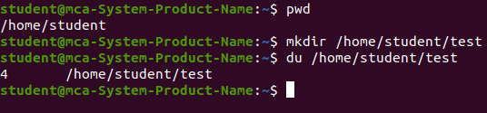

The `du` (disk usage) command in Linux is a valuable tool for checking the disk space usage of files and directories. It allows users to determine how much disk space each directory and its contents occupy, helping to manage disk space more efficiently. This command is particularly useful for system administrators or users who need to monitor disk usage and identify which files or directories are consuming the most space. The `du` command works by recursively traversing directories and summing up the size of all files and subdirectories within them, displaying the total disk usage for each directory.
To use the `du` command, simply type `du` followed by the directory or file path you wish to check. By default, `du` will display the disk usage for each directory within the specified path in kilobytes (KB). For example, running `du /home/user/Documents` will show the disk usage of the `/Documents` directory and its contents. If no path is specified, `du` will default to the current directory. A more commonly used option is `du -sh`, where the `-s` flag summarizes the disk usage for the specified directory, and the `-h` flag formats the output in a human-readable form (e.g., MB, GB). This is particularly useful when working with large directories, as it makes the output easier to interpret.
The `du` command also supports several other options to customize the output. The `-a` flag includes individual file sizes in addition to directories, while the `--max-depth=N` flag limits the depth of directory traversal, allowing you to view the usage of top-level directories without listing all subdirectories. Another useful option is `-c`, which provides a grand total of disk usage for the entire directory tree at the end of the output.
It is important to note that the `du` command works by reading file system metadata to calculate disk usage, so it may not always reflect the exact disk space used due to factors like file system overhead, hard links, or sparse files. However, it provides a reliable estimate of disk space usage for most use cases.
In summary, the `du` command is a versatile and essential tool for monitoring and managing disk space in Linux. Whether you're cleaning up disk space, auditing disk usage, or troubleshooting storage issues, `du` provides valuable insights into how space is being utilized across the file system, helping users keep their systems running efficiently.
Click Here For More